STAGE
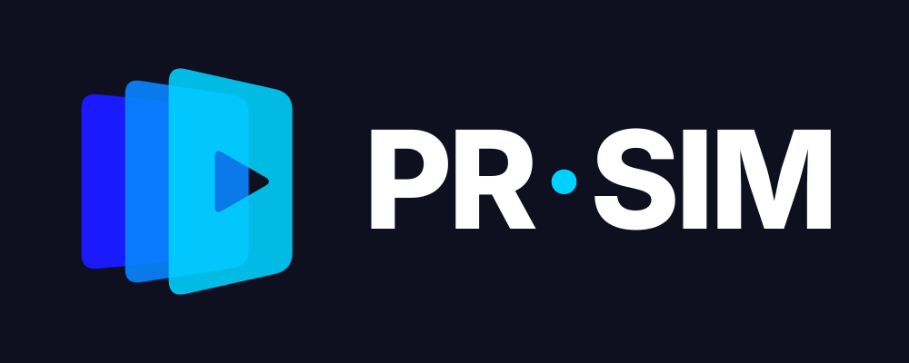
패널 3장 + 재생 컷아웃. 레퍼런스의 원근 스택을 그대로 계승하고, 맨 앞 슬라이드에 재생 삼각형을 뚫어 '발표를 실행해 보는' 시뮬레이터임을 표현.
TALK
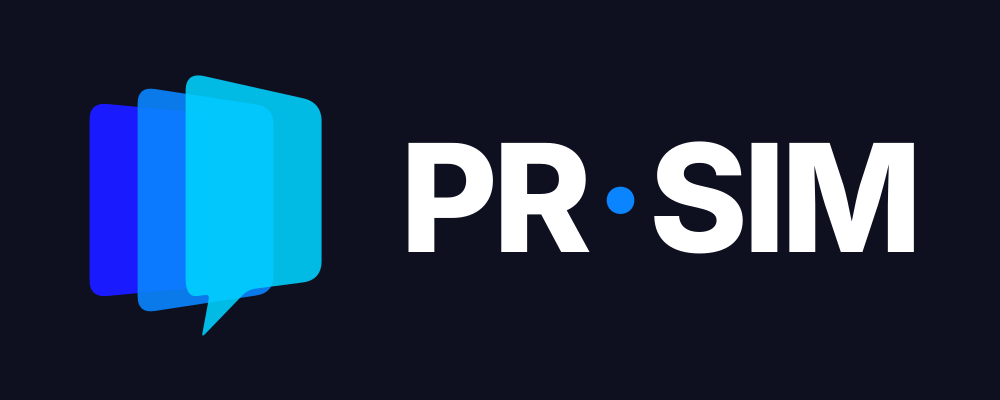
맨 앞 슬라이드 하단이 말풍선 꼬리로 연장. 슬라이드(자료)와 발화(말하기)가 한 형태로 결합 — 발표 연습 서비스의 핵심.
ECHO
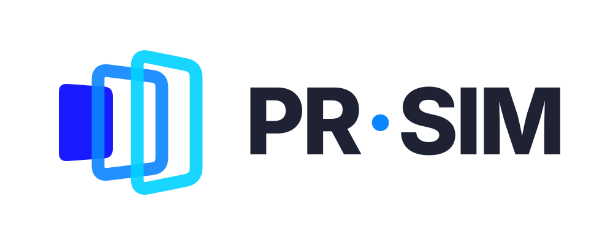
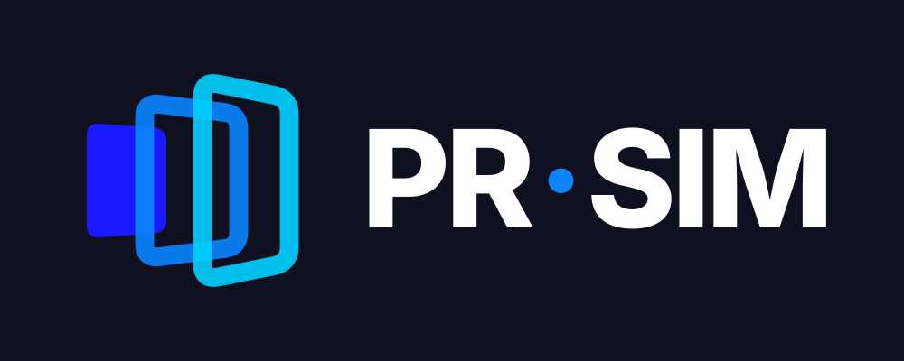
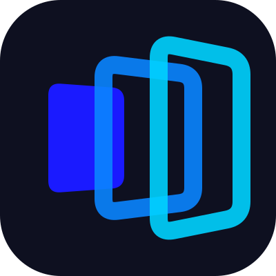
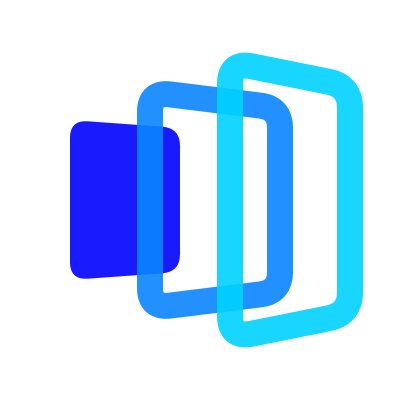
작은 솔리드 슬라이드에서 윤곽선 패널이 커지며 퍼짐. 목소리가 청중에게 전달되는 음파이자, 슬라이드가 넘어가는 진행감.
P-STACK
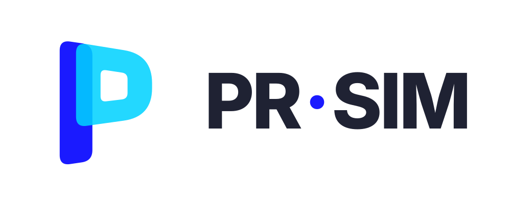
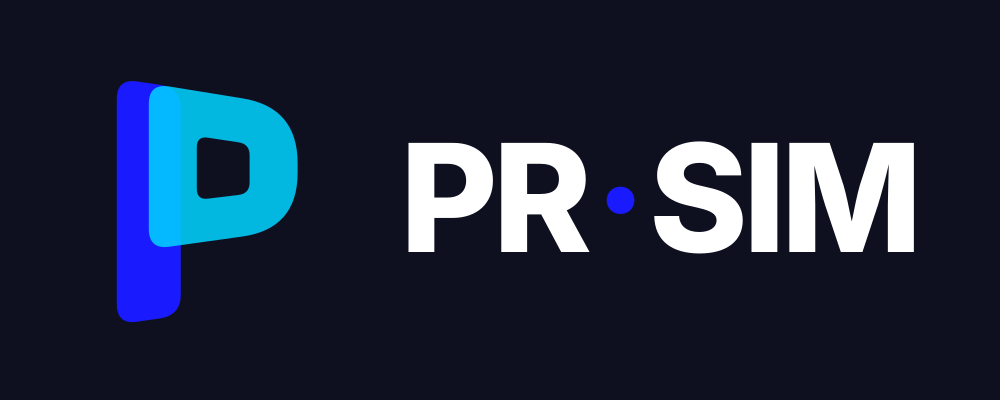
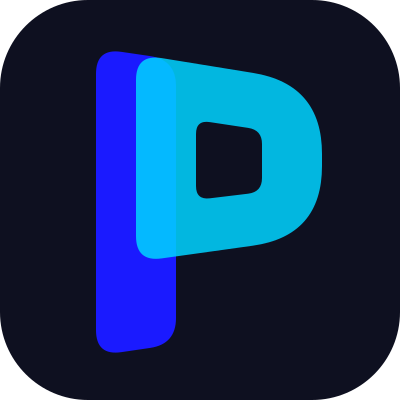
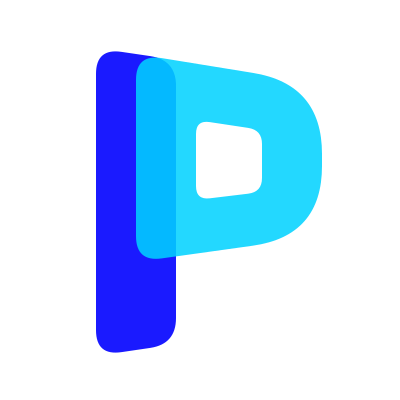
겹친 패널 두 장으로 만든 'P' 모노그램. 앱 아이콘·파비콘 등 작은 크기에서 가장 식별력이 높은 안.
LIVE
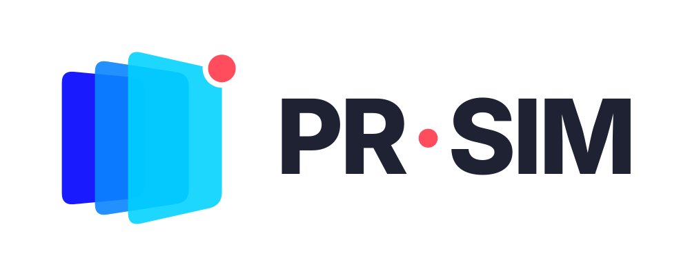
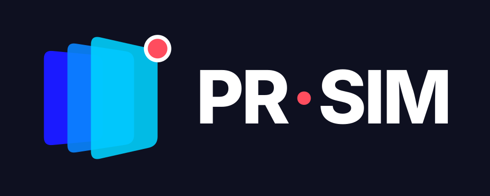
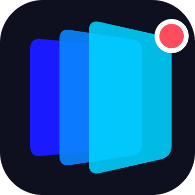
레퍼런스 스택 + 코랄 'ON AIR' 점. 실전처럼 녹화·심사가 진행 중이라는 긴장감. 워드마크 가운뎃점과 같은 색으로 연결.